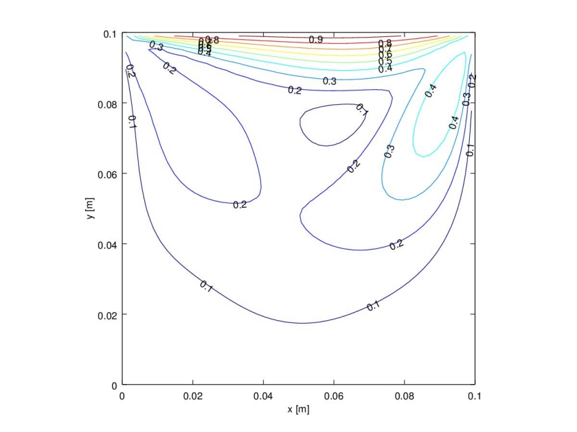

Lid-driven flow in a cavity: Navier-Stokes in FVTool
This is a very short post. Kai implemented the lid-driven cavity problem in FVTool, something that I couldn't have done soon or perhaps ever. You can find his implementation here. This is a contour plot of the velocity profile:

In case you look into the files, please don't compare his programming style with mine. My style is quite embarrassing!
Comments
Comments powered by Disqus